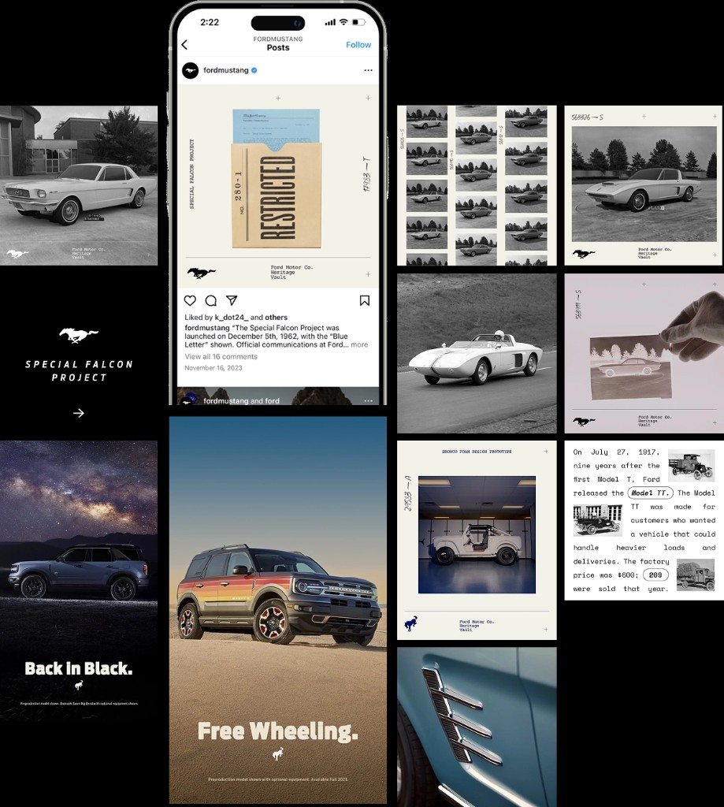
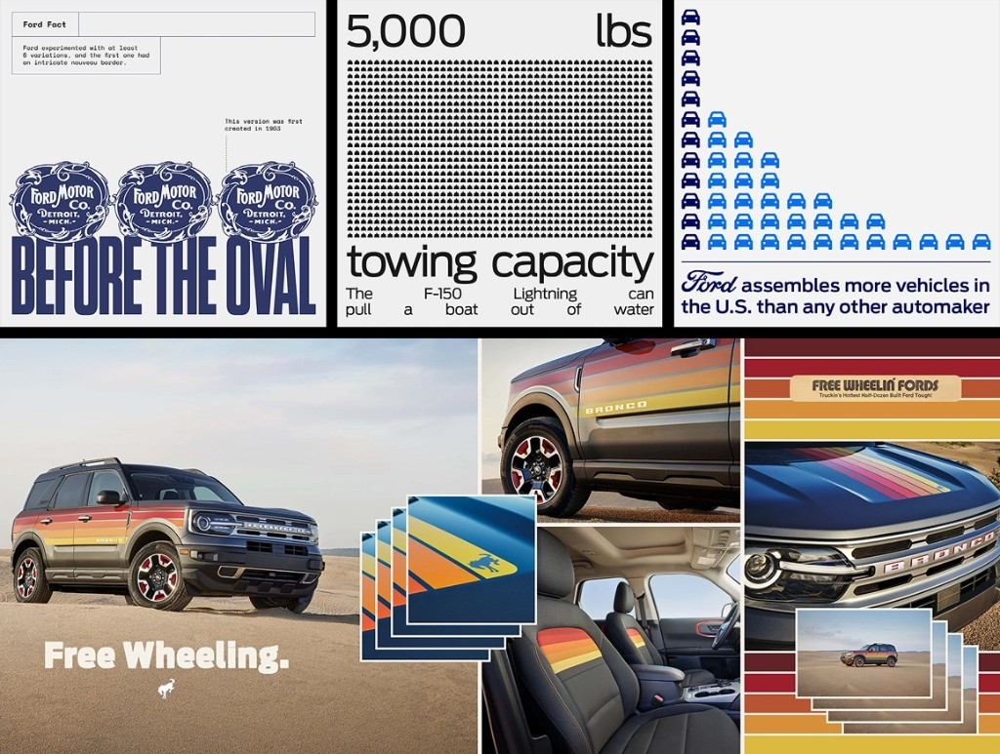

Social Media Design & Direction
Built Ford Tough.
Wieden+Kennedy hired me to own social design and production for Ford, on a fixed assignment across 3 channels. The assignment: bring a more editorial approach to FMC, Mustang, and Trucks/Bronco—using heritage, design, and the stories behind the vehicles to make the accounts feel less like advertising.

The Work
Ford, Mustang, and Bronco share a badge, not a personality. The work needed to hold together without flattening what made each account worth following.
Mustang took a sleek, graphic approach, with three-post compositions and new weekly themes. Bronco leaned into vintage typography and archival character. Ford’s corporate account turned company stories and impact into clear, design-led posts. Together, they brought a more editorial rhythm to the brand’s social presence.
My role was to carry the agency’s creative approach into the day-to-day work: maintaining quality and consistency while giving each account its own visual voice.
